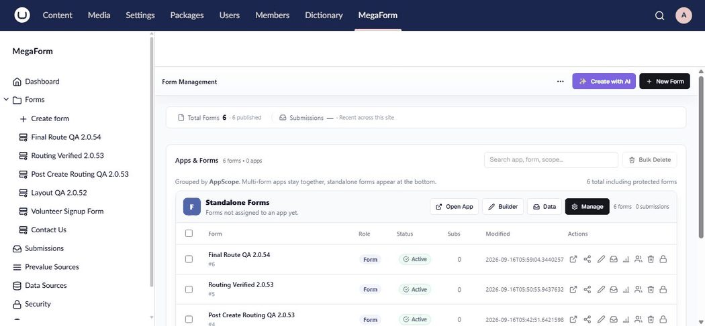

AI Form Designer on Umbraco
MegaForm runs inside the Umbraco backoffice, so you can create and refine forms without leaving the MegaForm section.
Create a new form
- Sign in to the Umbraco backoffice.
- Open MegaForm in the main navigation.
- Open the Dashboard and select Create with AI.
- Describe the form you need and send the request.
- Review the live form preview and ask for further changes.
- Select Save & Use Now, or choose Open Builder for detailed editing.

Continue editing in the builder
Open any form and select AI Designer in the builder toolbar. Ask MegaForm to add or remove fields, reorganize pages, improve validation, change labels, or configure submission behavior. The form canvas remains visible while you work, so you can inspect each change before saving.
Use existing Umbraco data
If Umbraco Forms is installed, import the source form first and then ask AI to adapt it for a new purpose. You can preserve the useful fields and behavior while changing the wording, layout, or visitor experience.
See Use Umbraco Forms data in MegaForm.
Publish on an Umbraco page
After saving the form, add the MegaForm picker to the target content type, select the form on a content item, and publish the page. See MegaForm on Umbraco for all supported embedding options.